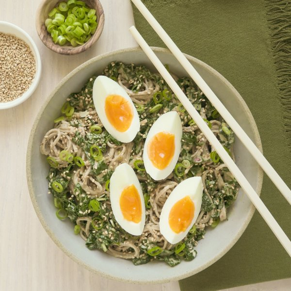

Spicy Sesame Soba Noodles with Kale, Green Onion & Soft-Boiled Eggs

Nutrition (per serving)
626.8 kcalCalories
27.6 gProtein
72.9 gCarbs
29.8 gFat
Full nutrition table
| Calories | 626.8 kcal |
| Total fat | 29.8 g |
| Saturated fat | 5 g |
| Trans fat | 0 g |
| Cholesterol | 163.7 mg |
| Sodium | 702.5 mg |
| Carbohydrates | 72.9 g |
| Fiber | 6.7 g |
| Sugars | 2.6 g |
| Protein | 27.6 g |
| Potassium | 932.4 mg |
| Calcium | 317.7 mg |
| Iron | 8.1 mg |
| Vitamin A | 574.1 IU |
| Vitamin C | 101.8 mg |
| Vitamin D | 36.1 IU |
Cookware
Ingredients
- 4eggs
- 1 small bunchgreen onions (scallions)
- 2 buncheskale
- 10 ozsoba (buckwheat) noodles
- chili-garlic sauce
- sesame seeds
- soy sauce
- tahini
- toasted sesame oil
Steps
- Place eggs in a small saucepan, cover with water, and bring to a boil. Reduce heat to a simmer and cook for 4 minutes. Drain hot water and add ice or run under cold water to cool.4 eggs
- Meanwhile, fill a large pot about halfway with hot water (from the tap); cover and bring to a boil over high heat.
- While the water heats up, wash and dry kale. Fold leaves in half lengthwise and slice off the stems. Stack leaves on top of one another, then cut crosswise into thin (shred-like) ribbons.2 bunches kale
- Once the water in the pot is boiling, uncover, add kale, and stir. Cook until bright green and wilted, about 15 seconds. Transfer kale to a colander using a slotted spoon. (Reserve pot of water for the next step.)
- Return water to a boil. Once the water is boiling, add noodles and cook according to package directions, about 5 minutes.10 oz soba (buckwheat) noodles
- Meanwhile, wash, dry, and trim green onions; cut crosswise into thin pieces and set aside.1 small bunch green onions (scallions)
- Place tahini, water, soy sauce, chili-garlic sauce, and oil in a large bowl. Whisk to combine the sauce and set aside.½ cup tahini
½ cup water
¼ cup soy sauce
2 tbsp chili-garlic sauce
2 tsp toasted sesame oil - When the noodles are done, drain in the colander over the kale. Rinse thoroughly under cold water and set aside to drain further.
- Peel and quarter the eggs.
- Add noodles, kale, and half of the green onions to the bowl with the sauce; toss to combine. (Reserve remaining green onions for serving.)
- To serve, divide the noodles and kale between plates or bowls. Top with remaining green onions, sesame seeds, and eggs. Enjoy!¼ cup sesame seeds